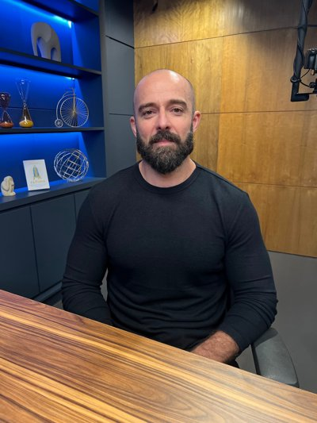
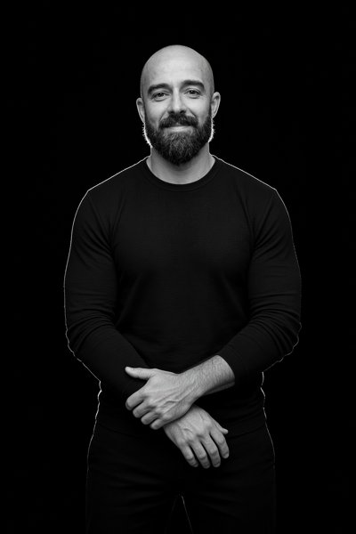
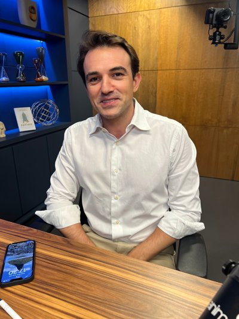
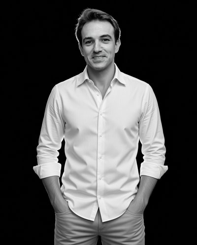
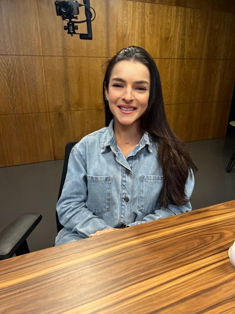
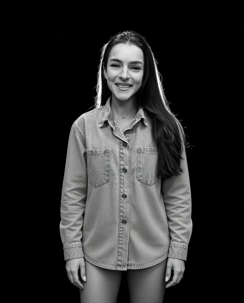
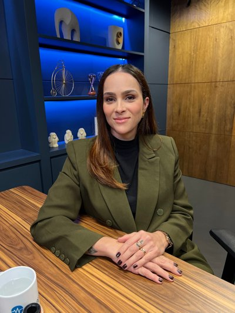
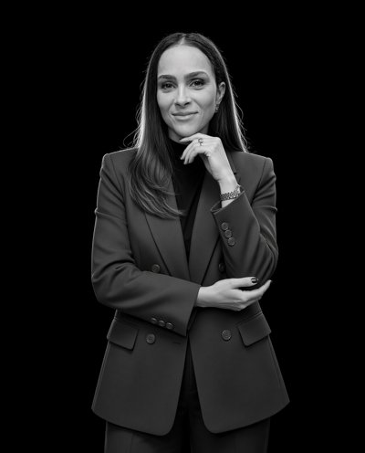

Validação — Anima Saúde (3 thumbs)
Montadas no Canva DAHT5dd2JhQ conforme o template DAHRWmfEwFc · fotos geradas no Grok Imagine a partir das fotos do Drive · 17/09/2026
Template de referência (#279)
#51 — Tony Geremias (pág. 12)


#54 — Lourenço Alencar e Luísa Peleja (pág. 15 · dupla)




- A foto anterior no Canva era o casal de apresentadores (errada) — substituída pela dupla real.
- Regra de dupla: bloco central recuado 60px à esquerda; Lourenço (1º nome) à frente; nome em uma linha.
#64 — Letícia Cazarré (pág. 25)

